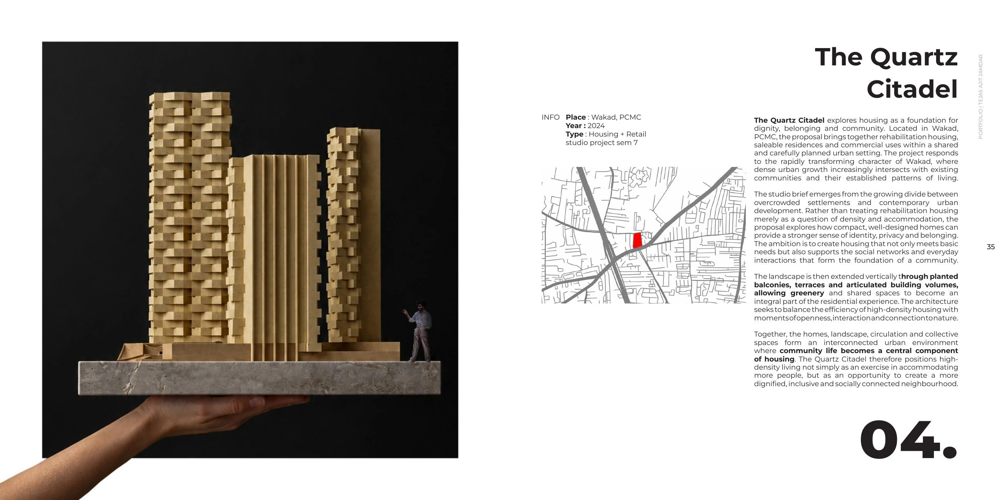
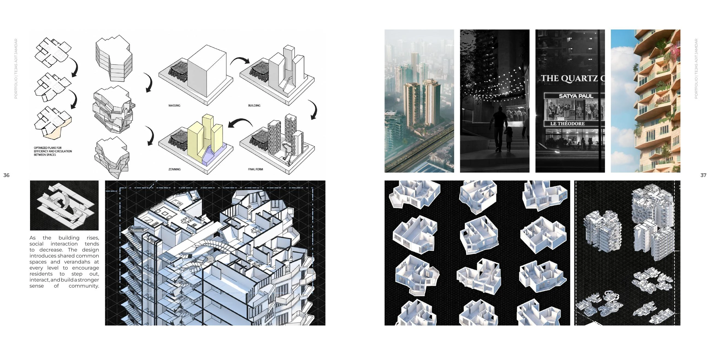
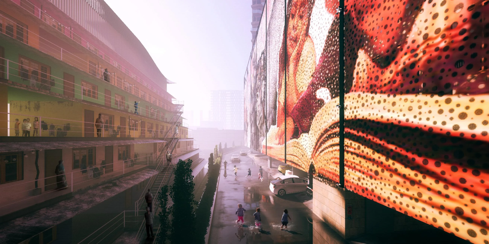

Housing Design · Tejas Ajit Jamdar
The Quartz Citadel
EVERYONE ASPIRES TO A GOOD HOUSE
The Quartz Citadel is an academic housing design project by Tejas Ajit Jamdar. Its starting point is a simple aspiration: “Everyone aspires to a good house.” The project belongs to the semester-seven work in this portfolio.
The original presentation sheets below document the architectural proposal. View them alongside the project’s three-dimensional model in the interactive gallery to move between the drawn presentation and the building’s overall form.
Project credits
ACADEMIC
Explore the interactive 3D portfolio →Save The Quartz Citadel on Pinterest ↗
Project presentation


